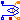
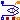
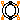
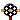
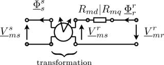

, is required for the transformation of the magnetic stator quantities to the rotor side.
, is required for the transformation of the magnetic stator quantities to the rotor side.
Components specially for electric machines
Extends from Modelica.Icons.Package (Icon for standard packages).
| Name | Description |
|---|---|
|  SinglePhaseWinding | Symmetric winding model coupling electrical and magnetic domain |
|  SymmetricMultiPhaseWinding | Symmetric winding model coupling electrical and magnetic domain |
|  RotorSaliencyAirGap | Air gap model with rotor saliency |
|  SymmetricMultiPhaseCageWinding | Symmetrical rotor cage |
| SaliencyCageWinding | Rotor cage with saliency in d- and q-axis |
| PermanentMagnet |
Symmetric winding model coupling electrical and magnetic domain
The single phase winding consists of a resistor, a symmetrical stray inductor and a single phase electromagnetic coupling.
SymmetricMultiPhaseWinding, SymmetricMultiPhaseCageWinding, SaliencyCageWinding RotorSaliencyAirGap
| Name | Description |
|---|---|
| useHeatPort | Enable / disable (=fixed temperatures) thermal port |
| RRef | Winding resistance per phase at TRef [Ohm] |
| TRef | Reference temperature of winding [K] |
| alpha20 | Temperature coefficient of winding at 20 degC [1/K] |
| TOperational | Operational temperature of winding [K] |
| Lsigma | Winding stray inductance per phase [H] |
| effectiveTurns | Effective number of turns per phase |
| orientation | Orientation of the resulting fundamental wave field phasor [rad] |
| Name | Description |
|---|---|
| pin_p | Positive pin |
| pin_n | Negative pin |
| port_n | Negative complex magnetic port |
| port_p | Positive complex magnetic port |
| heatPortWinding | Heat ports of winding resistor |
Symmetric winding model coupling electrical and magnetic domain
The symmetrical multi phase winding consists of a symmetrical winding resistor, a zero and stray inductor as well as a symmetrical multi phase electromagnetic coupling and a core loss model including heat port.
SinglePhaseWinding, SymmetricMultiPhaseCageWinding, SaliencyCageWinding RotorSaliencyAirGap
| Name | Description |
|---|---|
| m | Number of phases |
| useHeatPort | Enable / disable (=fixed temperatures) thermal port |
| RRef | Winding resistance per phase at TRef [Ohm] |
| TRef | Reference temperature of winding [K] |
| alpha20 | Temperature coefficient of winding at 20 degC [1/K] |
| TOperational | Operational temperature of winding [K] |
| Lsigma | Winding stray inductance per phase [H] |
| Lzero | Zero sequence inductance of winding [H] |
| effectiveTurns | Effective number of turns per phase |
| GcRef | Electrical reference core loss reluctance [S] |
| Name | Description |
|---|---|
| plug_p | Positive plug |
| plug_n | Negative plug |
| port_n | Negative complex magnetic port |
| port_p | Positive complex magnetic port |
| heatPortWinding[m] | Heat ports of winding resistors |
| heatPortCore | Heat port of core |
Air gap model with rotor saliency
This salient air gap model can be used for machines with uniform airgaps and for machines with rotor saliencies. The air gap model is not symmetrical towards stator and rotor since it is assumed the saliency always refers to the rotor. The saliency of the air gap is represented by a main field inductance in the d- and q-axis.
For the mechanical interaction of the air gap model with the stator and the rotor it is equipped with to
rotational connectors. The torques acting on both connectors have the same absolute values but different signs. The difference between the stator and the rotor angle,
, is required for the transformation of the magnetic stator quantities to the rotor side.
The air gap model has two magnetic stator and two magnetic rotor ports. The magnetic potential difference and the magnetic flux of the stator (superscript s) are transformed to the rotor fixed reference frame (superscript r). The effective reluctances of the main field with respect to the d- and q-axis are considered then in the balance equations

according to the following figure.
|  |
SinglePhaseWinding, SymmetricMultiPhaseWinding, SymmetricMultiPhaseCageWinding SaliencyCageWinding
| Name | Description |
|---|---|
| p | Number of pole pairs |
| L0 | Salient inductance of a single unchorded coil w.r.t. the fundamental wave |
| Name | Description |
|---|---|
| port_sp | Positive complex magnetic stator port |
| port_sn | Negative complex magnetic stator port |
| port_rp | Positive complex magnetic rotor port |
| port_rn | Negative complex magnetic rotor port |
| flange_a | Flange of the rotor |
| support | Support at which the reaction torque is acting |
 Modelica.Magnetic.FundamentalWave.BasicMachines.Components.SymmetricMultiPhaseCageWinding
Modelica.Magnetic.FundamentalWave.BasicMachines.Components.SymmetricMultiPhaseCageWindingSymmetrical rotor cage

The symmetric rotor cage model of this library does not consist of rotor bars and end rings. Instead the symmetric cage is modeled by an equivalent symmetrical winding. The rotor cage model consists of
 phases. If the cage is modeled by equivalent stator winding parameters, the number of effective turns,
phases. If the cage is modeled by equivalent stator winding parameters, the number of effective turns,  , has to be chosen equivalent to the effective number of stator turns.
, has to be chosen equivalent to the effective number of stator turns.
SinglePhaseWinding, SymmetricMultiPhaseWinding, SaliencyCageWinding, RotorSaliencyAirGap
Extends from Modelica.Magnetic.FundamentalWave.Interfaces.PartialTwoPort (Two magnetic ports for graphical modeling).
| Name | Description |
|---|---|
| m | Number of phases |
| useHeatPort | Enable / disable (=fixed temperatures) thermal port |
| RRef | Winding resistance per phase at TRef [Ohm] |
| TRef | Reference temperature of winding [K] |
| alpha20 | Temperature coefficient of winding at 20 degC [1/K] |
| TOperational | Operational temperature of winding [K] |
| Lsigma | Cage stray inductance [H] |
| effectiveTurns | Effective number of turns |
| Name | Description |
|---|---|
| port_p | Positive complex magnetic port |
| port_n | Negative complex magnetic port |
| heatPortWinding | Heat ports of winding resistor |
Modelica.Magnetic.FundamentalWave.BasicMachines.Components.SaliencyCageWindingRotor cage with saliency in d- and q-axis
The salient cage model is a two axis model with two phases. The electromagnetic coupling therefore is also two phase coupling model. The angles of the two orientations are 0 and  . This way an asymmetrical rotor cage with different resistances and stray inductances in d- and q-axis can be modeled.
. This way an asymmetrical rotor cage with different resistances and stray inductances in d- and q-axis can be modeled.
SinglePhaseWinding, SymmetricMultiPhaseWinding, SymmetricMultiPhaseCageWinding RotorSaliencyAirGap
Extends from Modelica.Magnetic.FundamentalWave.Interfaces.PartialTwoPort (Two magnetic ports for graphical modeling).
| Name | Description |
|---|---|
| useHeatPort | Enable / disable (=fixed temperatures) thermal port |
| RRef | Salient cage resistance |
| TRef | Reference temperature of winding [K] |
| alpha20 | Temperature coefficient of winding at 20 degC [1/K] |
| TOperational | Operational temperature of winding [K] |
| Lsigma | Salient cage stray inductance |
| effectiveTurns | Effective number of turns |
| Name | Description |
|---|---|
| port_p | Positive complex magnetic port |
| port_n | Negative complex magnetic port |
| i[2] | Currents out from damper [A] |
| lossPower | Damper losses [W] |
| heatPortWinding | Heat ports of winding resistor |
Simple model of a permanent magnet, containing:
Extends from Modelica.Magnetic.FundamentalWave.Sources.ConstantMagneticPotentialDifference (Source with constant magnetic potential difference), Modelica.Electrical.Machines.Losses.InductionMachines.PermanentMagnetLosses (Model of permanent magnet losses dependent on current and speed).
| Name | Description |
|---|---|
| V_m | Complex magnetic potential difference |
| m | Number of phases |
| permanentMagnetLossParameters | Permanent magnet loss parameters |
| useHeatPort | =true, if heatPort is enabled |
| Name | Description |
|---|---|
| port_p | Positive complex magnetic port |
| port_n | Negative complex magnetic port |
| flange | Shaft end |
| support | Housing and support |
| heatPort | Optional port to which dissipated losses are transported in form of heat |